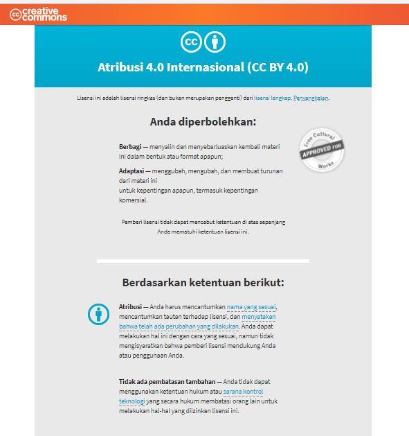

Panduan Mencari Gambar Berlisensi Creative Commons Melalui Mesin Pencari Gambar Google

Aktivitas mencari dan menggunakan gambar secara daring, khususnya melalui alat pencari gambar Google, perlu dibekali dengan pengetahuan tentang hak penggunaan setiap gambar yang ditemukan.
Pengetahuan tersebut bermanfaat untuk menjawab pertanyaan seperti:
Apakah gambar yang tersedia dapat digunakan secara langsung tanpa meminta izin?
Apakah boleh gambar tersebut digunakan dalam aktivitas komersial?
Dapatkah gambar-gambar tersebut diubah dan digubah?
Dengan memanfaatkan alat penyaring “Hak Penggunaan” di mesin pencari gambar Google, pengguna gambar dapat mengetahui apa yang boleh dan tidak boleh dilakukan terhadap gambar yang ditemukan. Alat penyaring ini membantu Anda untuk menemukan gambar-gambar berlisensi terbuka yang tersedia di situs web penyimpanan gambar seperti Wikimedia Commons, Flickr, maupun Pixabay. Namun, perlu diingat bahwa gambar-gambar berlisensi terbuka bukan berarti tanpa hak cipta. Untuk mengetahui lebih lanjut mengenai hak penggunaan gambar yang diberikan, Anda dapat mengunjungi situs web-situs web tersebut dan membaca ketentuan lisensi terbuka yang diterapkan. Gambar-gambar yang muncul biasanya merupakan gambar berlisensi Creative Commons dengan ketentuan yang berbeda-beda. Yang artinya, paling tidak Anda dapat menggandakan (mengunduh) dan menyebarkan kembali gambar tersebut, tanpa izin langsung pencipta.
Artikel ini akan memandu Anda untuk mencari gambar berlisensi Creative Commons melalui mesin pencari Google dengan memanfaatkan alat penyaring “Hak Penggunaan”. Berikut panduannya dalam lima tahap:
#1. Masuk ke laman mesin pencarian gambar Google. Lalu, masukan kata kunci gambar yang hendak Anda cari, misalnya kata kunci “Macau”: Kemudian klik “alat” (terletak di bawah ikon kaca pembesar), untuk menemukan fitur alat penyaring “Hak Penggunaan”.

#2. Alat tersebut akan memberikan Anda pilihan sebagai berikut:
-
Tidak difilter menurut lisensi;
-
Dilabeli untuk digunakan ulang dengan modifikasi;
-
Dilabeli untuk digunakan ulang;
-
Dilabeli untuk digunakan ulang secara non-komersial dengan modifikasi;
-
Dilabeli untuk digunakan ulang secara non-komersial.

Berikut penjelasan masing-masing “Hak Penggunaan” yang tersedia:
Bebas digunakan ulang: Memungkinkan Anda untuk menggandakan atau menyebarkan kembali gambar, namun tidak untuk mengubah dan menggubahnya.
Bebas digunakan ulang dengan modifikasi: Memungkinkan Anda untuk menggandakan dan menyebarkan kembali, sekaligus mengubah dan menggubah gambar yang ditampilkan.
Secara non-komersial: Ciptaan yang menerapkan ketentuan ini tidak dapat Anda gunakan dalam aktivitas komersial.
Pengingat: Jangan lupa untuk menerapkan Atribusi yang sesuai pada setiap penggunaan gambar. Atribusi merupakan kewajiban pengguna gambar untuk memenuhi hak moral pencipta gambar. Yaitu kewajiban untuk menyebutkan nama, sumber, dan ketentuan lisensi atau “Hak Penggunaan” yang diterapkan pada gambar. Ketentuan ini berlaku pada setiap jenis “Hak Penggunaan” gambar, dan berlaku tanpa batas waktu.
#3. Setelah mendapatkan gambar yang diinginkan berdasarkan hak penggunaan yang sesuai dengan kebutuhan Anda, Anda dapat mengikuti petunjuk berikut ini untuk memahami lebih lanjut tentang ketentuan lisensi yang diterapkan.

Contoh di atas merupakan hasil pencarian dengan kata kunci “Macau”, yang ketentuan “Hak Penggunaanya” adalah digunakan ulang dengan modifikasi.
Seperti yang Anda lihat pada keterangan di atas, gambar ini berasal dari Wikimedia Commons.
#4. Kemudian, Anda dapat membuka laman sumber gambar tersebut, untuk memahami keterangan gambar dengan lebih lanjut, seperti, nama pencipta gambar, pranala sumber gambar, dan teks ketentuan lisensi yang diterapkan.

Dalam hal ini lisensi yang diterapkan adalah lisensi Creative Commons Atribusi (CC BY).

Jika tautan lisensi “Creative Commons Attribution 2.0 Generic” diklik, maka Anda akan dibawa ke suatu laman yang memberikan penjelasan singkat mengenai ketentuan lisensi sebagai berikut:

Isi ketentuannya adalah:
Anda diizinkan:
-
Berbagi: Menyalin dan menyebarluaskan ciptaan.
-
Adaptasi: Menggubah, mengubah, dan membuat turunan dari materi ini untuk kepentingan apapun , termasuk kepentingan komersial. Dengan catatan:
-
Atribusi: Anda harus mencatumkan nama yang sesuai, mencantumkan tautan terhadap lisensi, dan menunjukan bahwa telah ada perubahan yang dilakukan. Anda dapat melakukan hal ini dengan cara yang sesuai, namun tidak mengisyaratkan bahwa pemberi lisensi mendukung Anda atau penggunaan Anda.
Artinya, Anda diizinkan untuk menggunakan ciptaan tersebut dengan mencantumkan nama pencipta dan mengubah, menggubah bahkan untuk menyebarluaskan gambar tersebut guna kepentingan apapun. Namun, tidak berarti pemegang hak cipta mendukung secara penggunaan ciptaan.
Lisensi Creative Commons
Selain lisensi CC BY, terdapat pilihan lisensi lainnya yaitu:
-
Creative Commons Atribusi-BerbagiSerupa (CC BY-SA)
-
Creative Commons Atribusi-NonKomersial (CC BY-NC), Creative Commons (BY-NC-SA),
-
Creative Commons Atribusi-TanpaTurunan (CC BY-ND),
-
Creative Commons Atribusi-NonKomersial-TanpaTurunan (CC BY-NC-ND).
6 pilihan lisensi tersebut dirangkai dari 4 spektrum berikut ini:
Atribusi (BY)
 Spektrum ini berfungsi sebagai pembebanan kewajiban terhadap pengguna ciptaan untuk mencantumkan nama yang sesuai, mencantumkan tautan terhadap lisensi, dan menyatakan perubahan yang dibuat jika ada. Pengguna ciptaan dapat menerapkan atribusi dalam format yang sesuai dengan tempat ciptaan dibagikan, tanpa memberikan tambahan pernyataan dukungan dari pencipta terkait penggunaan ciptaan tersebut.
Spektrum ini berfungsi sebagai pembebanan kewajiban terhadap pengguna ciptaan untuk mencantumkan nama yang sesuai, mencantumkan tautan terhadap lisensi, dan menyatakan perubahan yang dibuat jika ada. Pengguna ciptaan dapat menerapkan atribusi dalam format yang sesuai dengan tempat ciptaan dibagikan, tanpa memberikan tambahan pernyataan dukungan dari pencipta terkait penggunaan ciptaan tersebut.
BerbagiSerupa (SA)
 Spektrum ini hanya berlaku ketika ciptaan diubah, digubah, atau dibuat turunan dari ciptaan. Setiap perubahan, penggubahan, atau ciptaan turunan yang dibuat wajib menerapkan lisensi yang sama apabila materi asli menerapkan ketentuan ini.
Spektrum ini hanya berlaku ketika ciptaan diubah, digubah, atau dibuat turunan dari ciptaan. Setiap perubahan, penggubahan, atau ciptaan turunan yang dibuat wajib menerapkan lisensi yang sama apabila materi asli menerapkan ketentuan ini.
NonKomersial (NC)

Spektrum ini melarang pengguna ciptaan untuk menggunakan ciptaan untuk kepentingan komersial apapun.
TanpaTurunan (ND)

Spektrum ini melarang pengguna ciptaan untuk mengumumkan setiap hasil pengubahan, penggubahan atau pembuatan ciptaan turunan dari ciptaan.
Dengan memperhatikan setiap ketentuan dari spektrum atau pilihan lisensi CC, Anda dapat terhindarkan dari pelanggaran hak cipta dan mengambil langkah yang cermat dalam setiap aktivitas penggunaan.
Tags:
Oleh: Fitriayu
16 Feb 2018Kategori:
Berita Terbaru
- Lokakarya Hak Cipta dan Lisensi Creative Commons di Pekanbaru
- Pengumuman Resmi: Hasil Akhir Training of Trainers Creative Commons Indonesia
- Literatur tentang Model Bisnis Terbuka "Made With CC"
- Data dan Artikel Ilmiah Terbuka dari PLOS!
- Konten Format Model 3 Dimensi Berilsensi CC di Platform Sketchfab